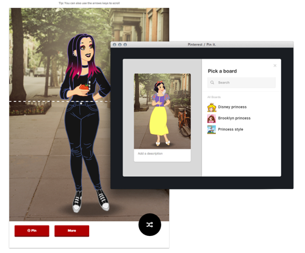
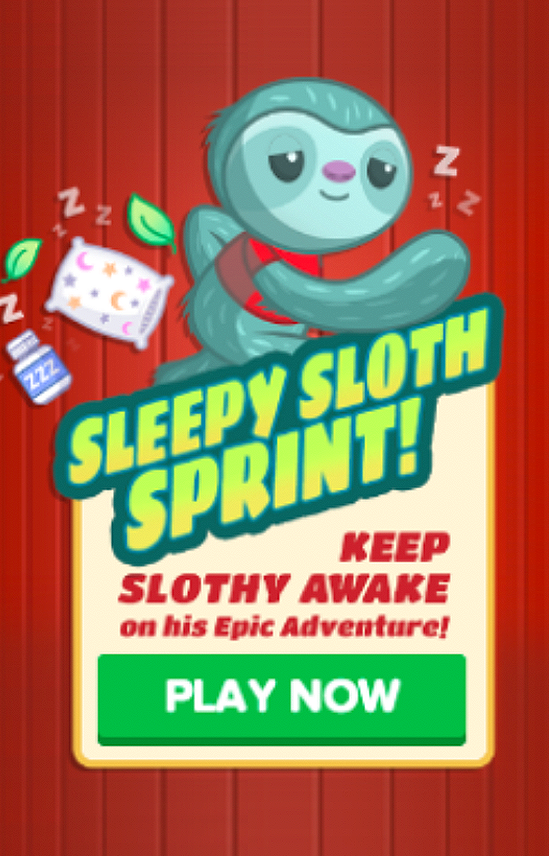
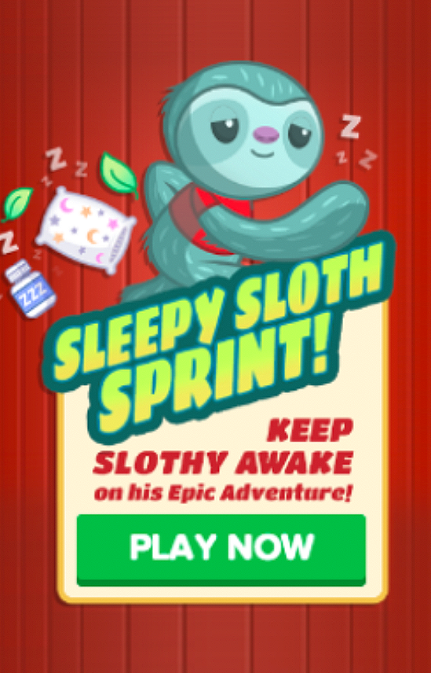

2012
Election Widget
France TV Info
Player clicks to get a randomized result from a bin of images.

Porjects
2012
Player clicks to get a randomized result from a bin of images.

2
As one of the most requested game formats, we develop this typing trivia and a simple CMS that allows the content creator quickly create a trivia game on any topics by uploading the images and writing the question-answer text.
3 Name Generator The player inputs their name to generate a custom artifact that was inspired by the TV shows such as "Games of Thrones" and "Orange is the New Black"
4
As a coffee shop's barista, the player has to remember a series of complex coffee orders from different customers and tap the ingredients in the right sequence.


5
The player creates a shareable, Pinterest friendly composition by mixing and matching multiple images.
6 Slider Randomizer The player chooses an option within a slider to get a result.
7
Based on a classic 20-questions game, “Emoji Oracle” asks a series of binary yes/no question to guess the emoji you have in mind.

8 Single-click action game The player controls the avatar to avoid the falling objects by tapping the left and right side of the screen. The games are fully customizable to adjust a different theme from graphics, animation speed, and scoring.
 

Outcome
With an average of 30-40% completion rate, many games went on becomes a huge hit. This further validated that game format is a worthy investment to keep the BuzzFeed audiences engaged and entertained. After a 9-months experimentation phase, the strategy had shifted to increasing the game output by developing a more robust game-making tool that empowers more content creators to make games. The game team got dissolved as some members joined the bigger Content Managment System team to integrate the popular formats as part of the publishing tool.
Role: Product design. Team: 4 engineers, 1 producer and 1 illustrator.